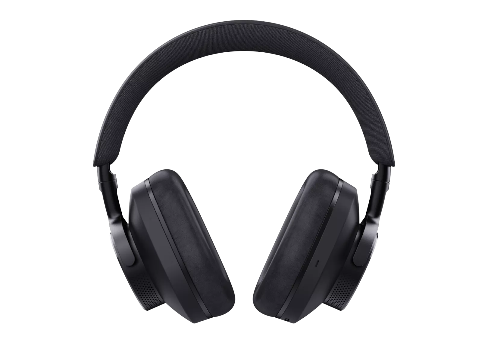
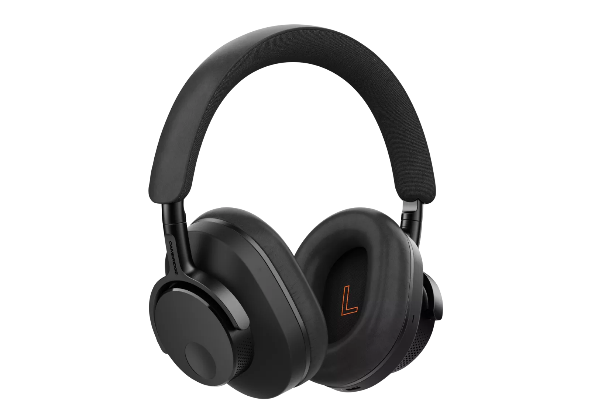
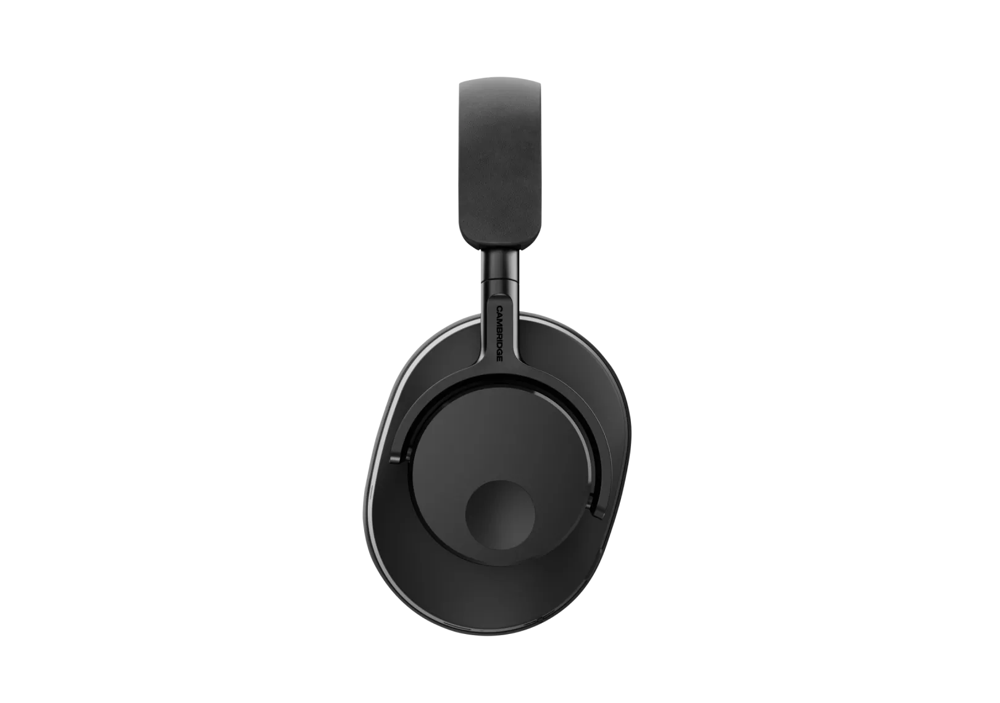
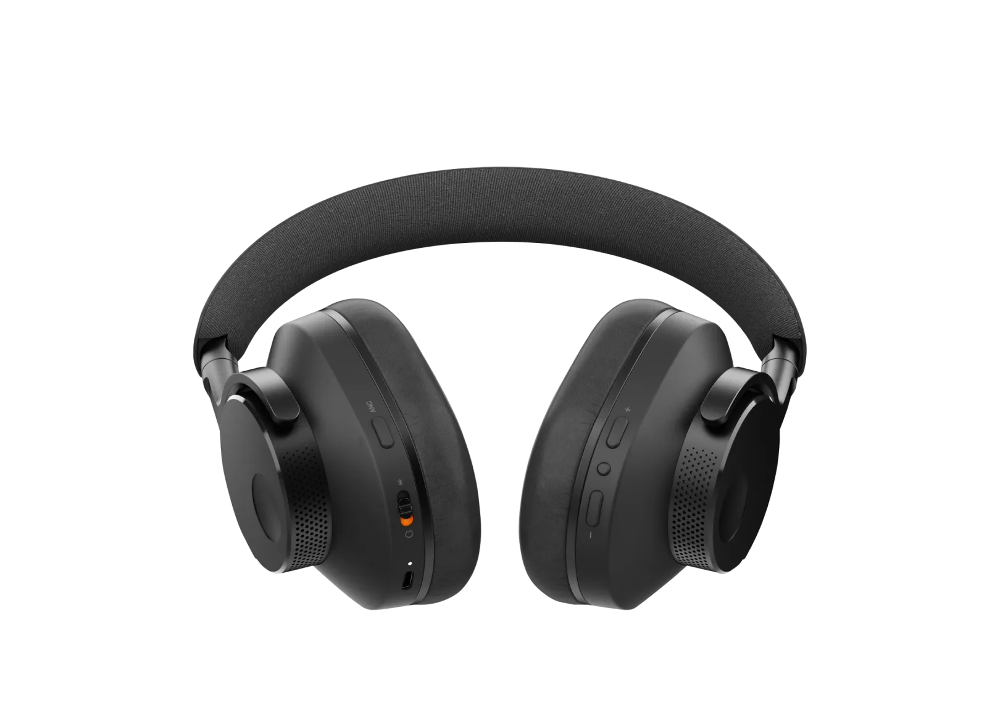
ANC搭載オーバーイヤーヘッドホン
Melomania P100 SE
快適性とチューニングを向上させ、没入感のある高忠実度オーディオをさらに進化。Class A/Bアンプ駆動の40mmドライバー、アダプティブハイブリッドANC、最大100時間のユーザー交換可能バッテリー——果てしないリスニングのために設計されました。
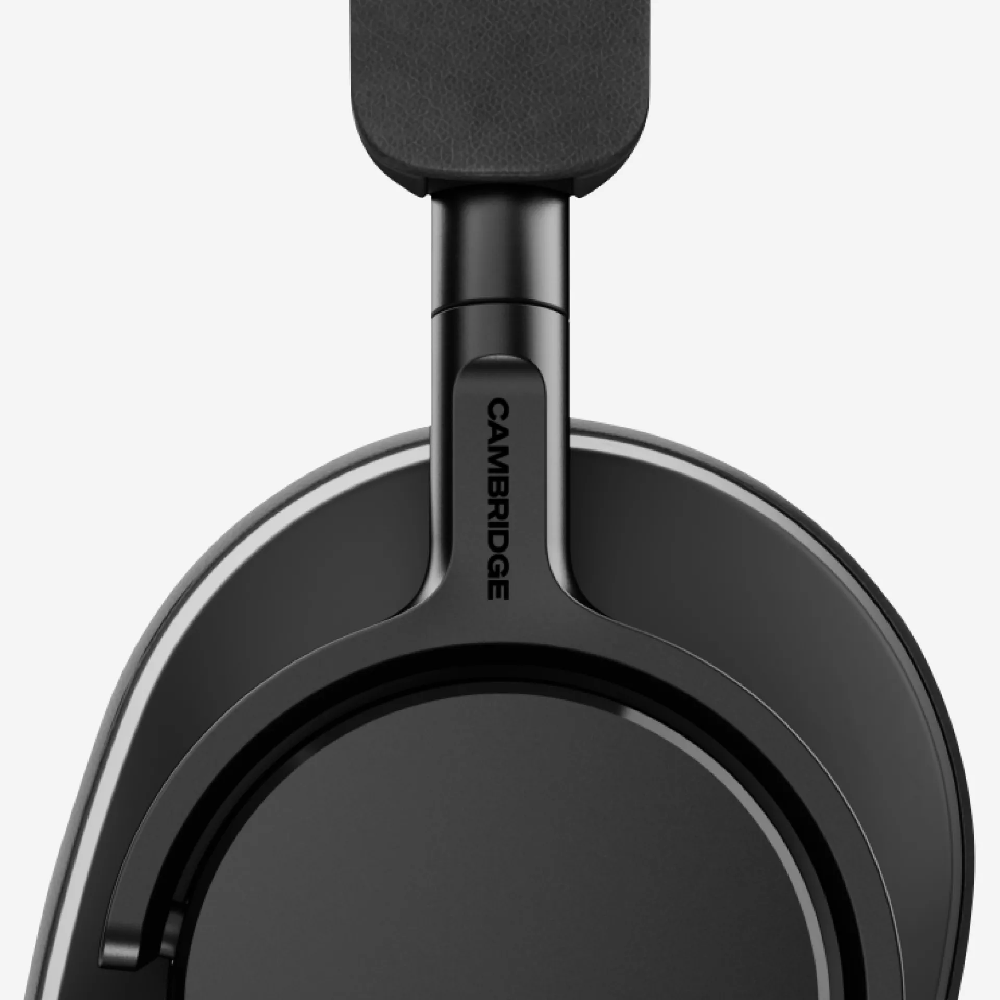
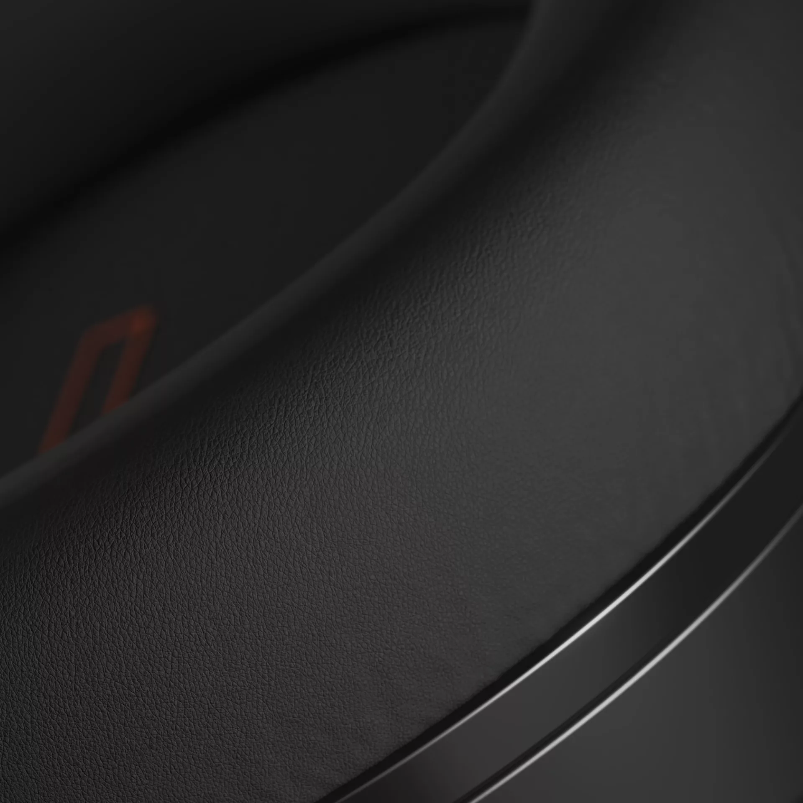
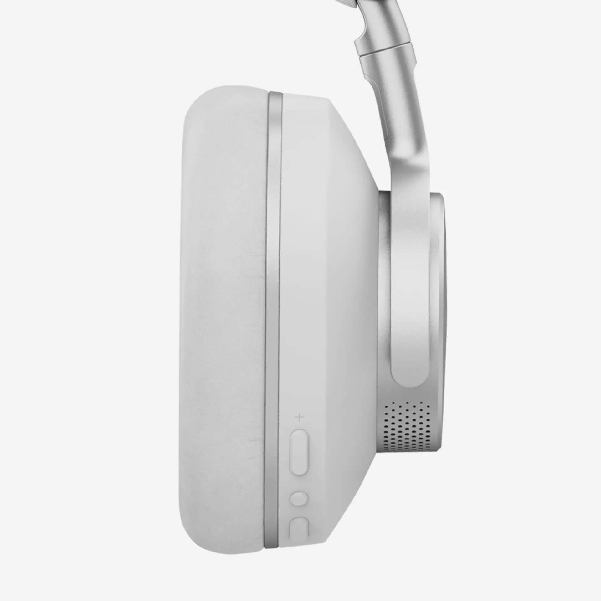
Hi-Fiエンジニアが設計、音楽のために生まれた
50年以上のエンジニアリング専門知識を、シグネチャーHi-Fiサウンドに凝縮。初代P100からのサウンドをさらに磨き上げるために、エンジニアがすべての音符にこだわり抜きました。その成果をぜひ体感してください。
大好きな音楽を、もっと長く
再設計されたヘッドバンドにより快適性が向上し、音楽への没入感がさらに深まります。バッテリーとイヤーパッドクッションは一般的な工具で交換可能。長期間のご使用を前提にした設計で、大好きな音楽をもっと長くお楽しみいただけます。
DynamEQ
現代のライフスタイルにはリスニングの柔軟性が求められますが、どんな環境でも音楽の品質は犠牲にしたくない。DynamEQは、低音と高音を微妙に調整し、あらゆる音量で音楽を完璧にバランスさせます。ボリュームを最大にしても、オフィスで控えめに聴いても、すべてのトラックがフルでナチュラルに響きます。
"サウンドは素晴らしく、ビルドクオリティも印象的。そしてバッテリーライフは依然として圧巻。"
Deep Listening, Even Outside Your Home
ロンドンのHi-Fiエンジニアが設計——音楽を愛し、外出先でも最高品質の再生を求める方のために。スマートテクノロジーとプレミアム素材、そして最長の旅を何度でも支える交換可能バッテリーを組み合わせ、人生の挑戦に立ち向かいながら、お気に入りの曲をまるで初めて聴くかのように体験できるヘッドホンです。
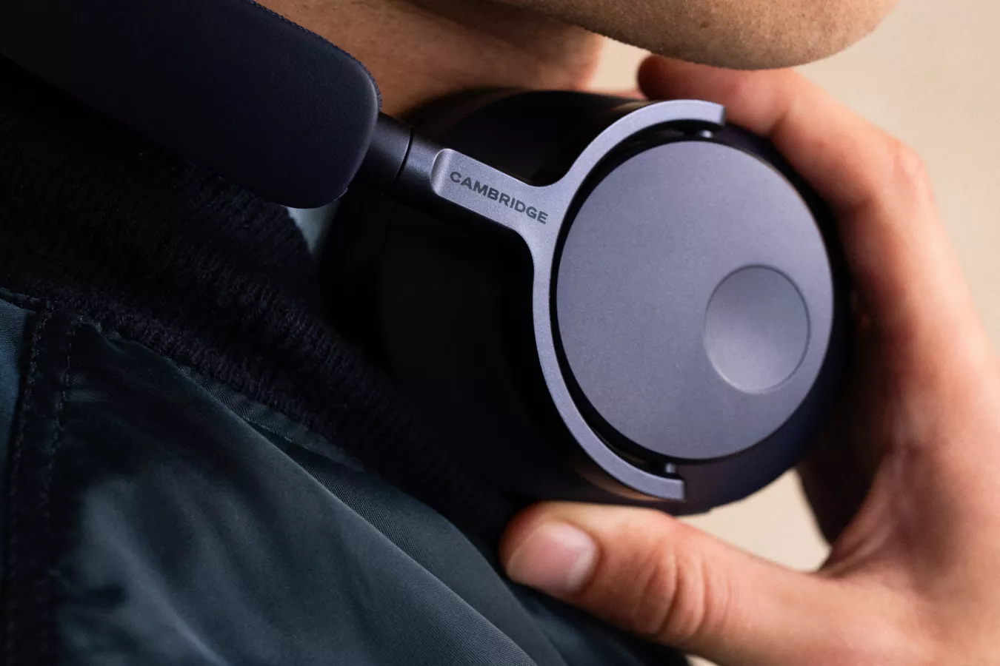
真の音楽愛好家のために
ワンチャージで100時間
フル充電で最大100時間（ANC使用時60時間）のリスニングをお楽しみいただけます。バッテリーが少なくなっても、わずか5分の充電で約4時間の再生が可能です。
優れたアンプリフィケーション
受賞歴のあるCXシリーズアンプの核となるClass A/Bアンプが、シグネチャーサウンドを駆動。99%のヘッドホンに搭載される標準技術とは一線を画す、聴けばわかる違いをお届けします。
ロスレスクラリティ
aptX Lossless Bluetoothが音楽をビットバイビットで完全に伝送し、ワイヤレスリスニング中も妥協のないサウンドクオリティを維持。Snapdragon Soundにより24bit/96kHzでのストリーミングも実現。
アダプティブコネクティビティ
aptX Adaptiveがインテリジェントに接続品質をモニタリングし維持。電波環境が厳しい場所でも、途切れのないパフォーマンスを実現します。
カスタマイズ可能なサウンド
よりダイナミックなサウンドを実現するためチューニングを強化しましたが、お好みに合わせたカスタマイズも可能。Melomania Connectで自分だけのプリセットを作成するか、6つの厳選プロファイルからお選びいただけます。
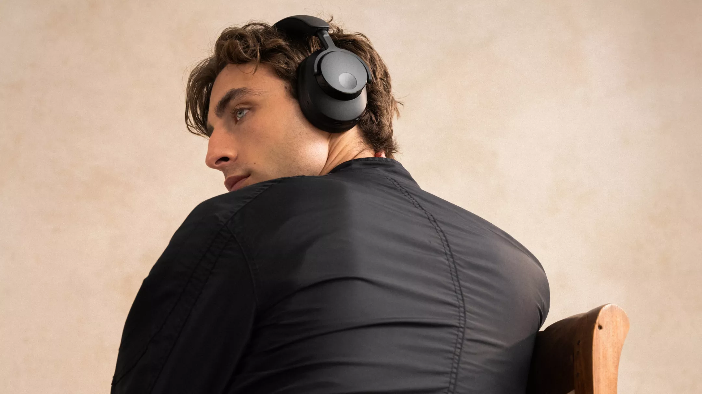
エンジニアリングの追求
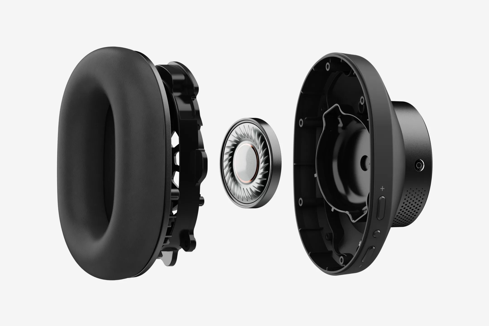
ディテールに宿る発見
精巧に作り込まれた40mmドライバーが、音楽のエネルギーをすべて保存。サウンドに包み込まれ、これまで聞こえなかった楽曲のニュアンスを発見できます。
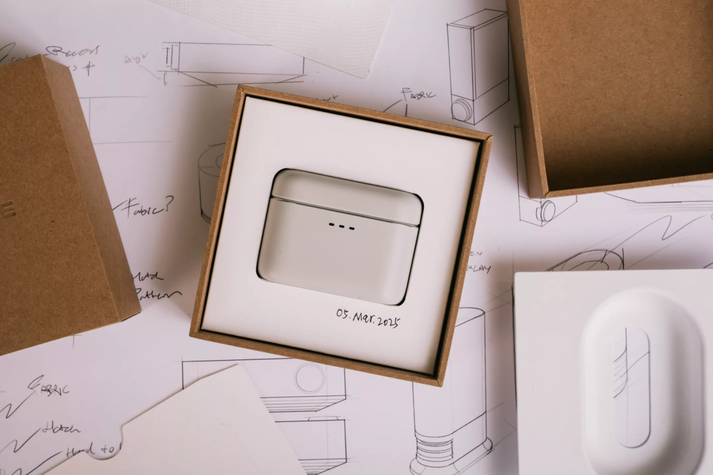
音楽のため、地球のため
循環型経済を推進し、廃棄物を最小限に。レアアース・ネオジムの100%とプラスチックの50%にリサイクル素材を使用。パッケージもすべてエコフレンドリーでプラスチックフリーです。
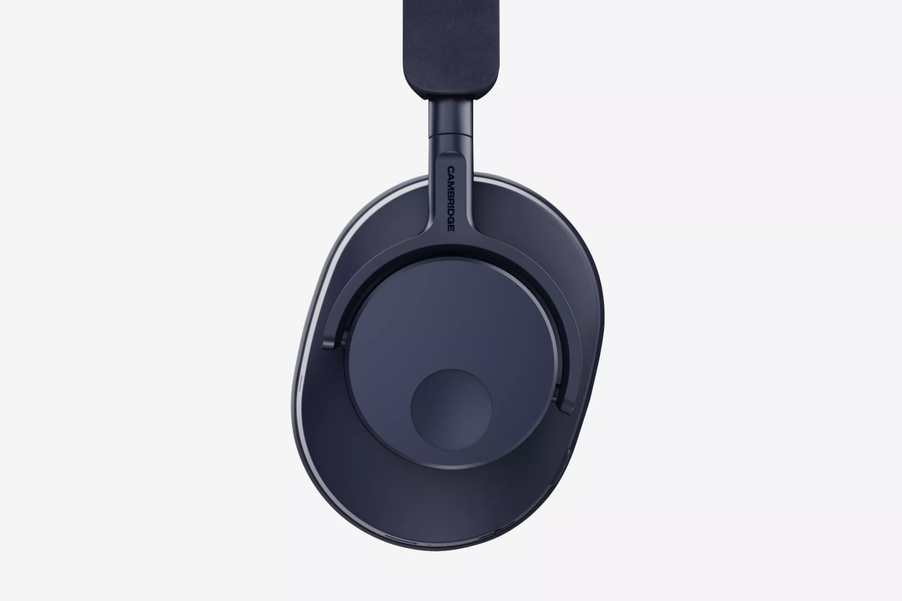
クリスタルクリアな通話品質
複数のビームフォーミングマイクとQualcomm最新のcVc 8.0テクノロジーが背景ノイズを抑制し、卓越した音声クリアリティを実現します。
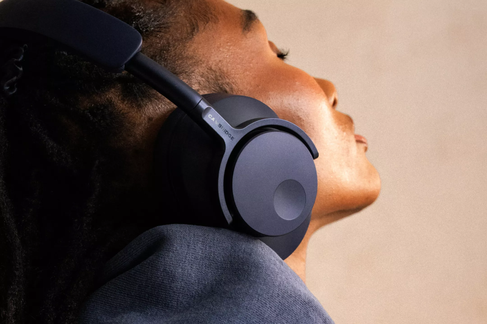
アクティブノイズキャンセリング
騒がしい街の喧騒を静寂のサンクチュアリに変える。高性能アダプティブハイブリッドノイズキャンセリングが、マイクアレイと最先端テクノロジーを組み合わせ、真に没入感のある体験を提供。周囲の音を聞きたいときは、ワンタップでトランスペアレンシーモードに切り替えられます。
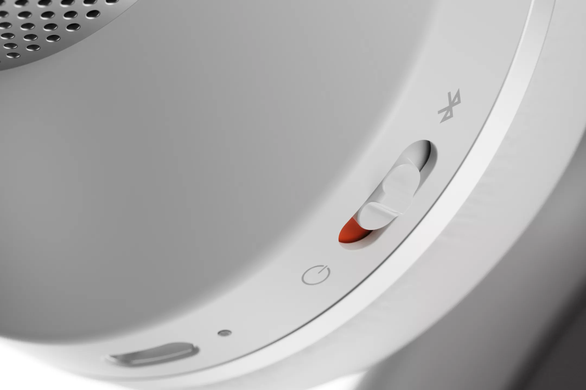
エフォートレスリスニング
シンプルで直感的なコントロールで、リスニング体験を簡単に操作。SiriやGoogleアシスタントとのシームレスな連携もお楽しみいただけます。
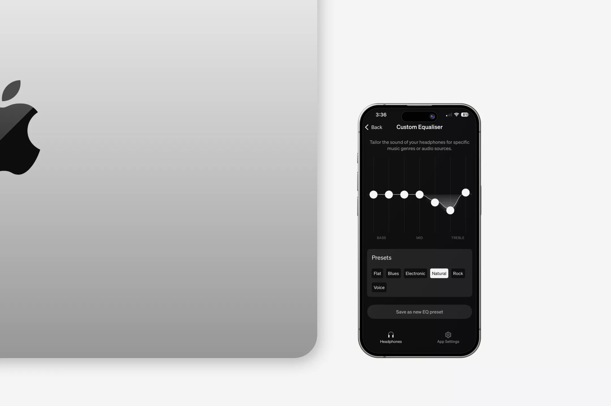
音楽を最大限に楽しむ
2台のデバイスに同時接続し、プレイリスト、ノートPCの映画、スマートフォンの通話をシームレスに切り替え——再接続の手間はありません。付属ケーブルを使えば、24bit/96kHzの有線接続も可能です。
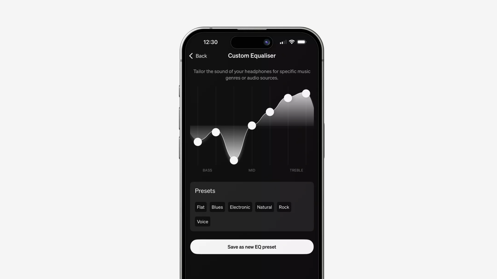
サウンドをカスタマイズ
7バンド調整EQで、自分だけのサウンドシグネチャーを作り上げましょう。ボーカルを強化し、低音を引き締め、高音を微調整——リスニング体験を完全にコントロールできます。
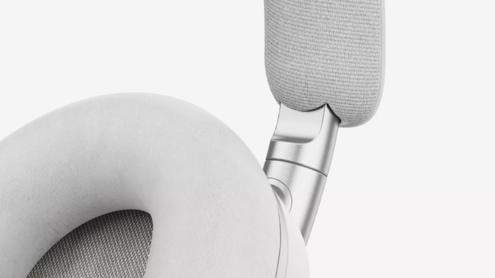
比類なきサウンドのために
ロンドンで設計・チューニング。エンジニアが多彩な音楽ジャンルで徹底的にテストし、卓越したリスニング体験を実現し、業界ベンチマークを超えるパフォーマンスを達成しました。